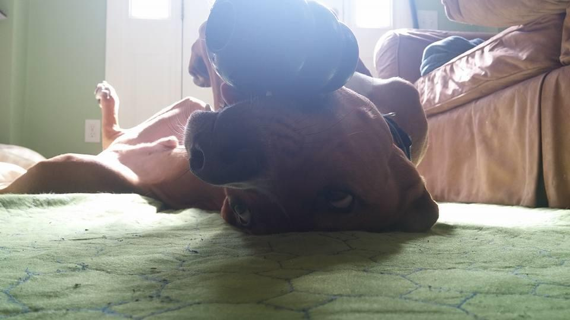
Get to know Robin, a lab and hound mix, with maybe a sprinkle of pit-bull in him. Robin has the most unique personality, that can not help to bring a smile to anybody’s face.
Journey
How it Started
Robin was brought to a shelter in Rhode Island from a kill shelter in North Carolina. He was moved with his three brothers as puppies. Robin was originally named Huey, and his brothers were name Dewy and Louie. His brothers were adopted but he was not. Someone who just lost his dog of fifteen years a few months ago came in to try and fill a hole. The shelter brought Huey in first. The person knew then he would leave with this puppy. Huey was full of awkward but also full of love. Huey did indeed leave to his forever home that day. The car ride home his owned quickly found out the hard way, Huey did not like being in the car.
Bonding
Huey’s owner did not think the name fit him. Huey was full of energy, jumping off this, and was going to be the best side kick ever. His owner has a love of DC comics so with this and how Huey first showed his personality, Huey was now known as Robin. Robin showed no fear in the apartment or the backyard. He would jump on tables, jump off them, chase his owner around just using his front legs. Things were different when not in those areas. Robin would get scared on walk from cars going by to a bicycle leaning on a building. Robin never showed and still to this day aggression towards anyone. Meeting knew people he can be a bit much as he wants to just jump and lick you all over. Robin likes to gain your trust and then lung in for a French kiss. Even being warned he can catch people off guard.
The Journey Continues
Robin has been in his forever home for five years and it has been a blasé for both Robin and his owned. When possible they do everything together. Robin does great work comforting his owner when sick or injured and vice versa the few times Robin has been. They continue working on Robin’s confidence during walks and runs. Car rides are still a lost cause, even with trying everything they just put him into instant panic mode. Luckily, for Robin he is not forced to go through it that much. His owner has found the things that make him the happiest and does to his best to fill Robin’s life with these things. His owner found Robin when they were both not a good place and are able to constantly able to bring joy to each other. Robin will continue to be the best sidekick for years to come.
Likes
- Eating
- Backyard catch
- In-house catch
- Chasing his owner around
- Other medium/big dogs
- All Humans
- Glow in the dark footballs
- Stuffed Animals
Dislikes
- Car Rides
- Fireworks
- Small Dogs
- Toys being taken away
- Noisy walks/runs
- The vet office
- Getting yelled at
Gallery
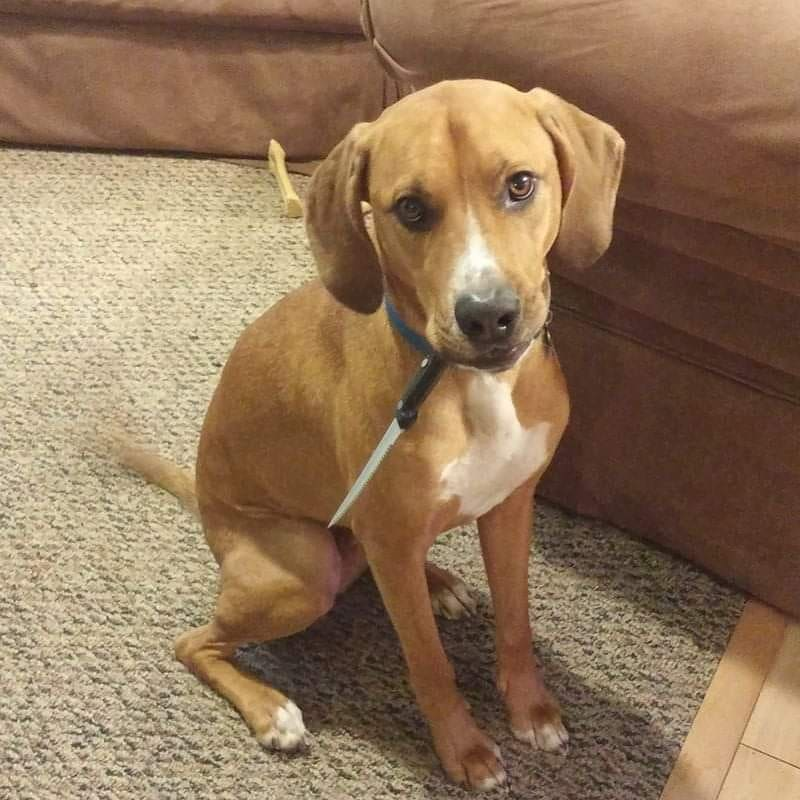

Seeing a lake for the first time.
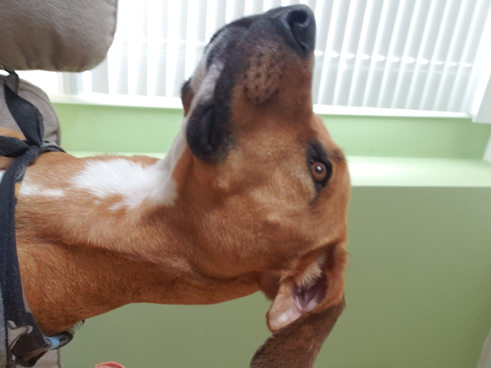
Being Majestic
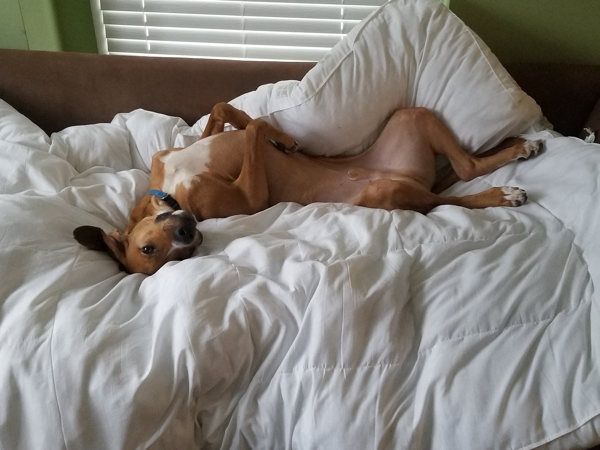
Relaxing
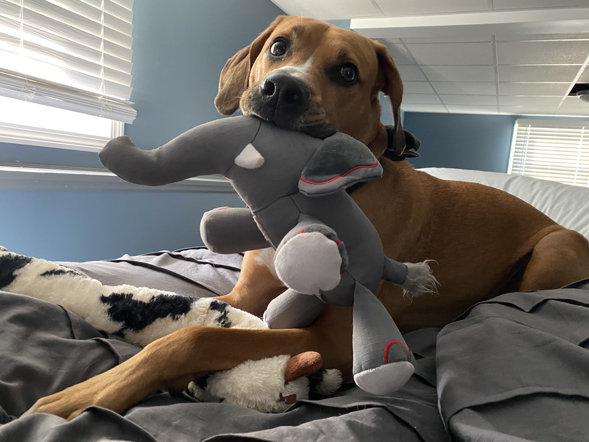
Showing off his toy
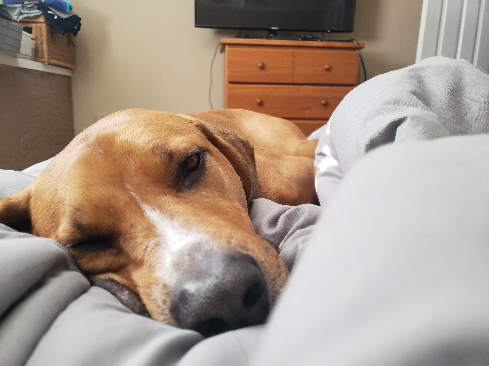
Feeling sleepy
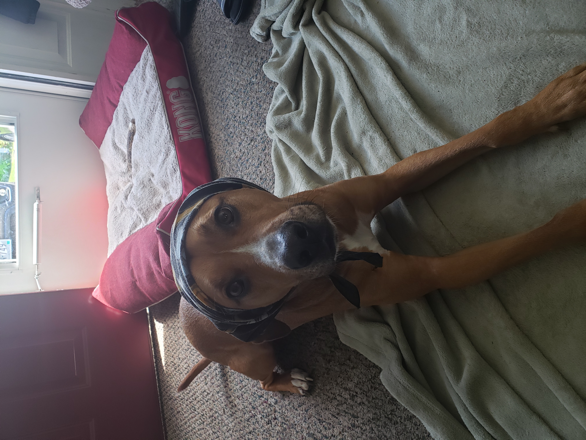
Grandma Robin

Having an American Dream
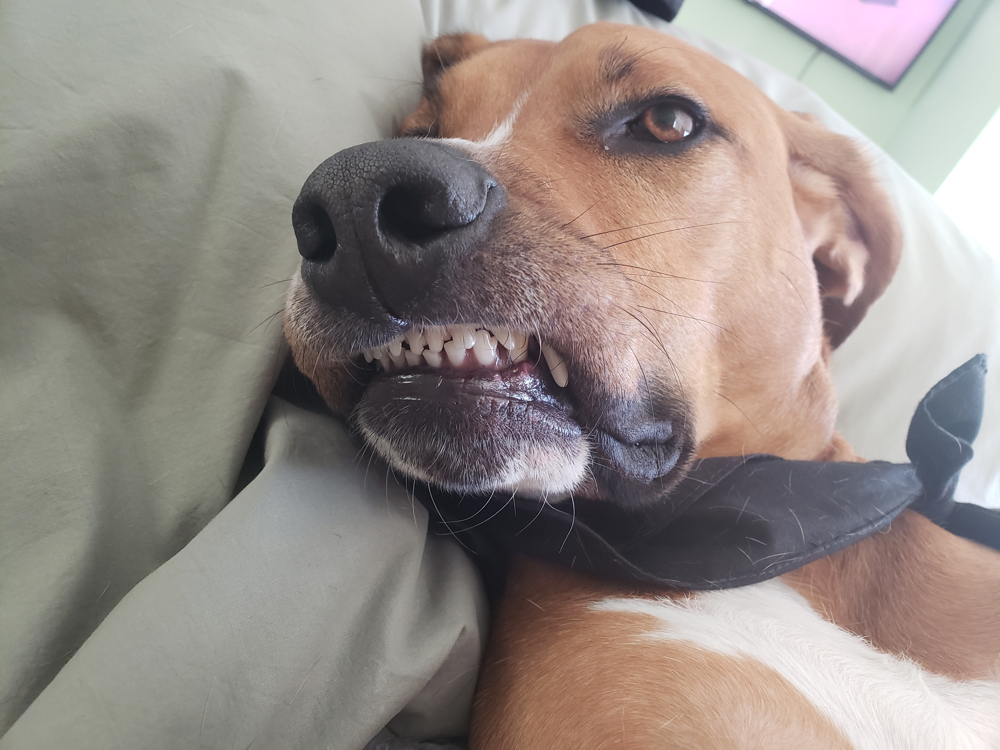
Derp
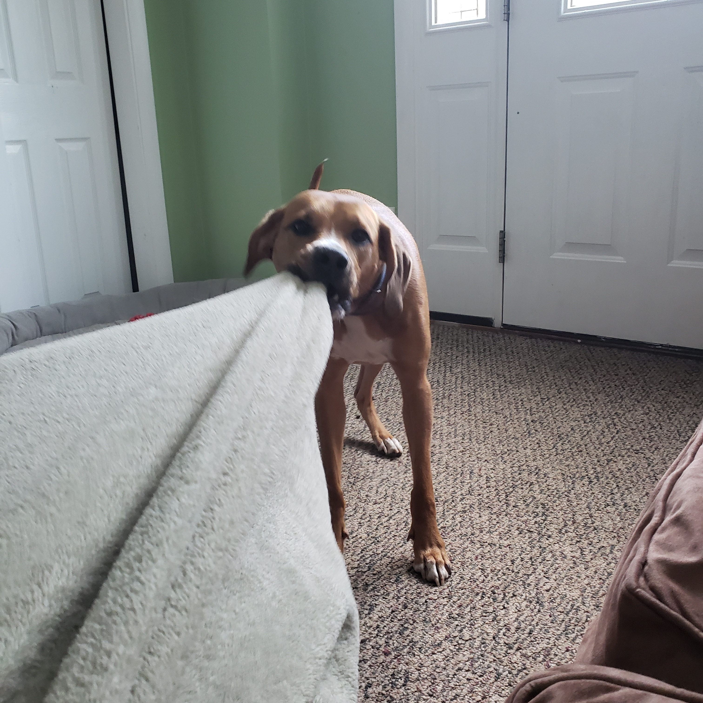
No time to rest
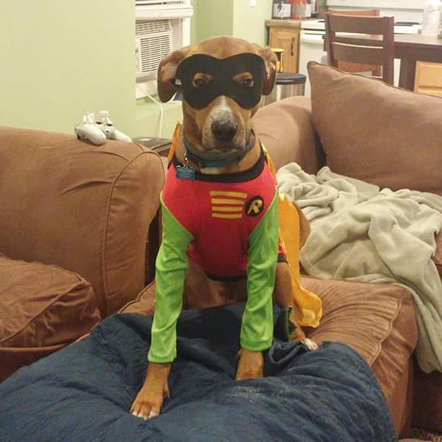
Boy Wonder
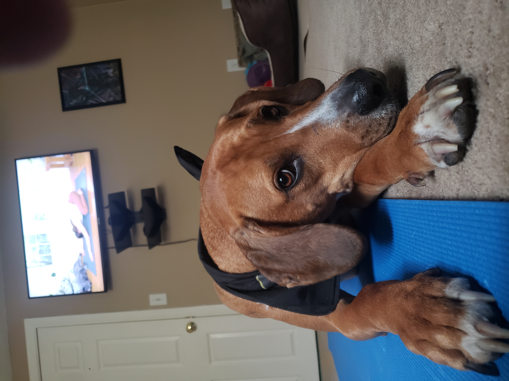
Downward dog
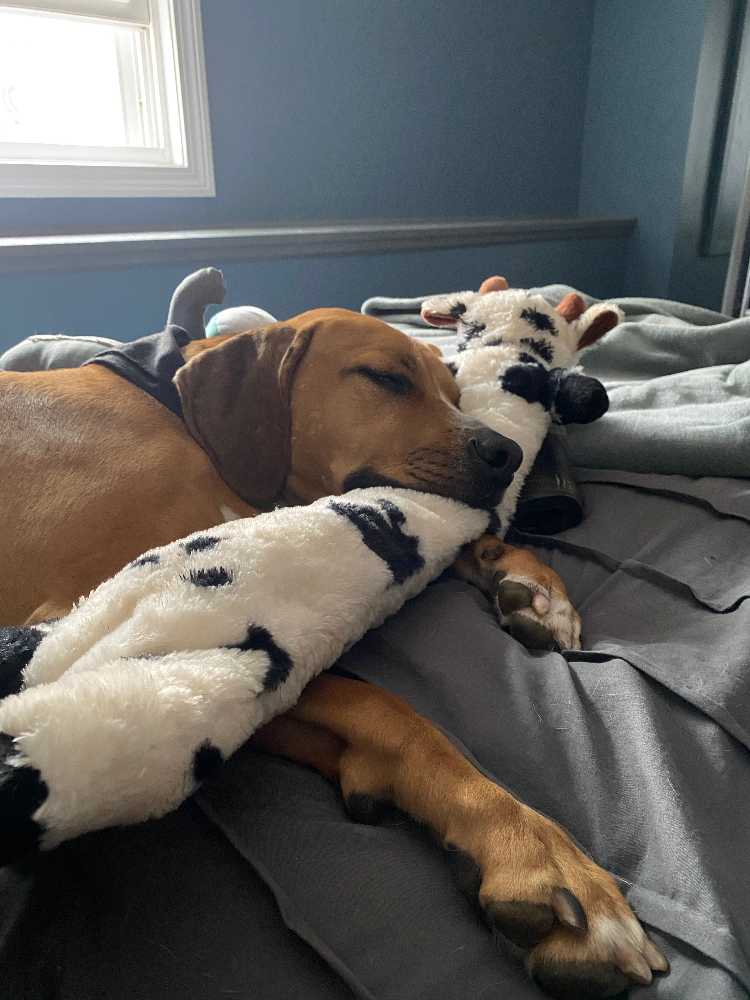
Cashed out
Adopt
Why Should you Adopt?
Because you'll save a life.
Each year, it's estimated that more than one million adoptable dogs and cats are euthanized in the United States, simply because too many pets come into shelters and too few people consider adoption when looking for a pet. The number of euthanized animals could be reduced dramatically if more people adopted pets instead of buying them. When you adopt, you save a loving animal by making them part of your family and open up shelter space for another animal who might desperately need it.
Because you'll get a great animal.
Animal shelters and rescue groups are brimming with happy, healthy pets just waiting for someone to take them home. Most shelter pets wound up there because of a human problem like a move or a divorce, not because the animals did anything wrong. Many are already house-trained and used to living with families.
Because it’ll cost you less.
Usually when you adopt a pet, the cost of spay/neuter, first vaccinations (and sometimes even microchipping!) is included in the adoption price, which can save you some of the up front costs of adding a new member to your family. Depending on the animal, you may also save on housebreaking and training expenses.
Because of the bragging rights.
No one needs to see another selfie—unless it’s a selfie of you with the adorable pet you just adopted! Adopt a pet, post those pictures and let the well-earned likes roll in.
Because it's one way to fight puppy mills.
If you buy a dog from a pet store,online seller or flea market, you’re almost certainly getting a dog from a puppy mill.
Puppy mills are factory-style breeding facilities that put profit above the welfare of dogs. Animals from puppy mills are housed in shockingly poor conditions with improper medical care, and are often very sick and behaviorally troubled as a result. The moms of these puppies are kept in cages to be bred over and over for years, without human companionship and with little hope of ever joining a family. And after they're no longer profitable, breeding dogs are simply discarded—either killed, abandoned or sold at auction.
These puppy mills continue to stay in business through deceptive tactics — their customers are unsuspecting consumers who shop in pet stores, over the Internet or through classified ads. Puppy mills will continue to operate until people stop supporting them. By adopting a pet, you can be certain you aren't giving them a dime.
Because your home will thank you.
Many of the pets from shelters and rescues are already house-trained, which means you’re not only saving a pet’s life, you may be saving your rug. Adopting a mature pet not only gives older animals a second chance, it often means introducing them to your family will be much easier.
Because all pets are good for your health, but adoptees offer an extra boost.
Not only do animals give you unconditional love, but they have been shown to be psychologically, emotionally and physically beneficial to their companions. Caring for a pet can provide a sense of purpose and fulfillment and lessen feelings of loneliness. And when you adopt, you can also feel proud about helping an animal in need!
Because adoption helps more than just one animal.
Overburdened shelters take in millions of stray, abused and lost animals every year, and by adopting an animal, you’re making room for others. Not only are you giving more animals a second chance, but the cost of your adoption goes directly towards helping those shelters better care for the animals they take in!
Because The Shelter Pet Project makes it easy.
You can go to the Shelter Pet Project to find pets near you, of every size, color, temperament and breed. Purebred and mixed breed animals alike are waiting for their forever homes!
Because you'll change a homeless animal's whole world.
And get a new best friend out of the deal. Seriously, what could be better than that?